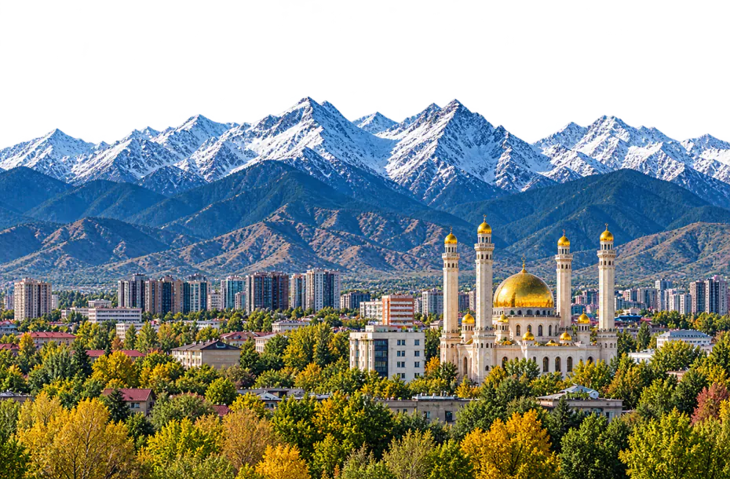
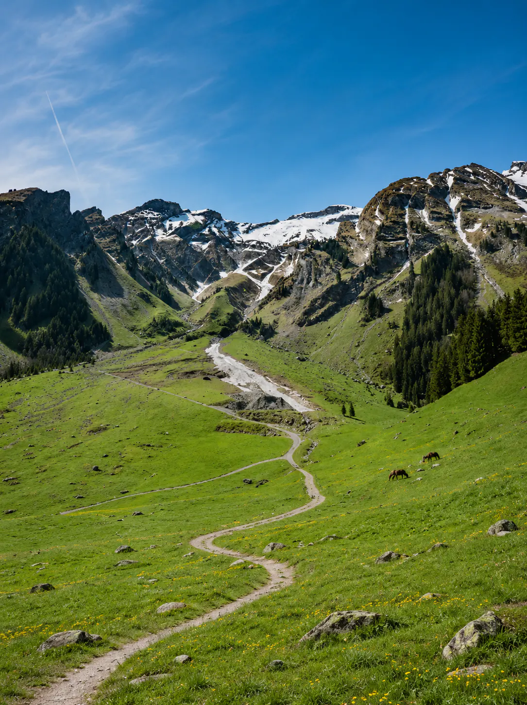
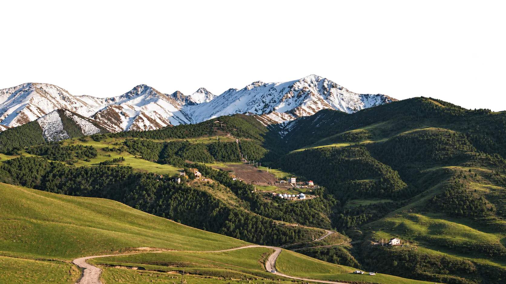
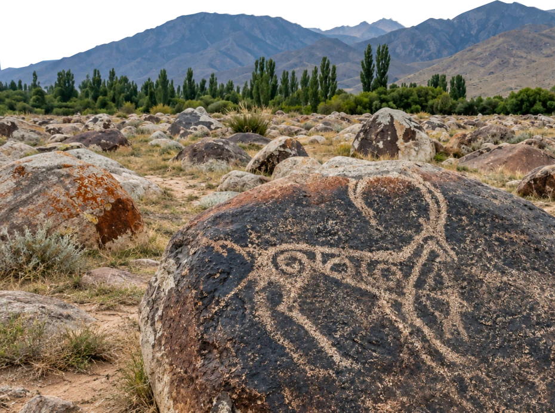
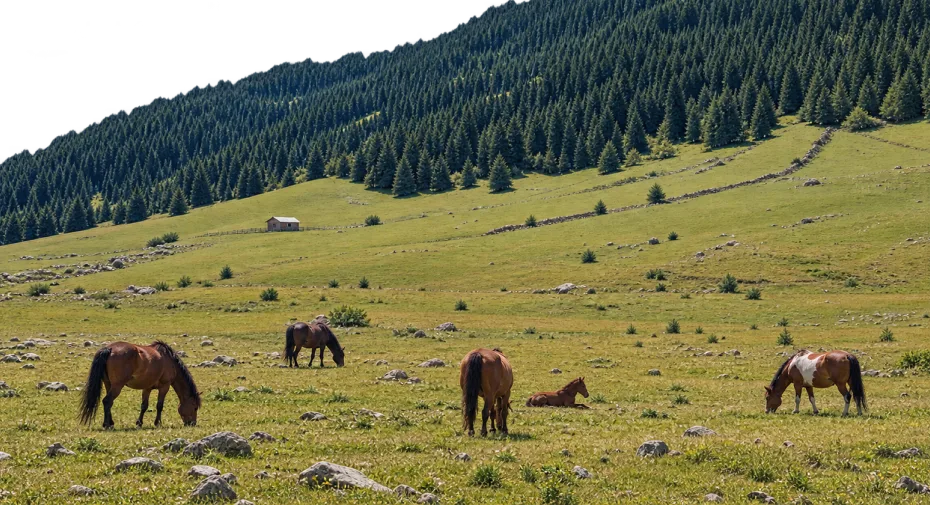
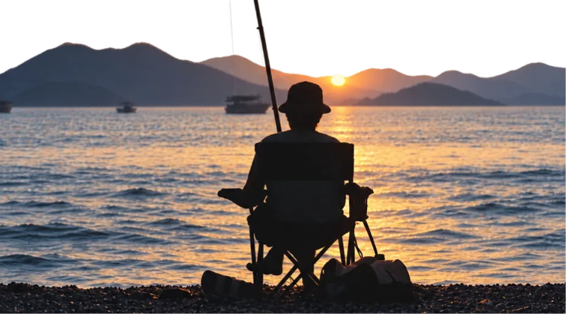
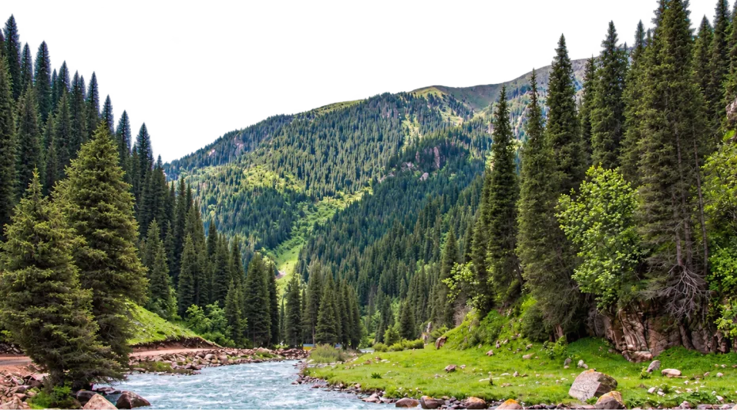

Day 1Bishkek
Traditional lunch at Supara, the drive to Issyk-Kul and a quiet evening by the lake





An unhurried journey along the northern shore of Issyk-Kul: lakeside rest, horse rides, mountain gorges, traditional food and fishing. The trip starts in Bishkek and goes through Balykchy, Cholpon-Ata, Kyrchyn and Grigorievka Gorge — we’ve marked the main stops on the map

Day 1Traditional lunch at Supara, the drive to Issyk-Kul and a quiet evening by the lake

Day 2Ancient petroglyphs, a walk or bike ride along the shore and a traditional banya

Day 3Horse ride in the mountains, exploring the gorge and cooking kuurdak together

Day 4Early-morning fishing for chebak, cooking the fresh catch and a relaxed day by the lake

Day 5A walk among coniferous forests and mountain views, a picnic outdoors and a final evening at Issyk-Kul
Breakfast by the lake and the drive back to Bishkek with an airport transfer


Leave a request — we’ll find suitable dates, agree on the details and calculate the price
Find travel dates